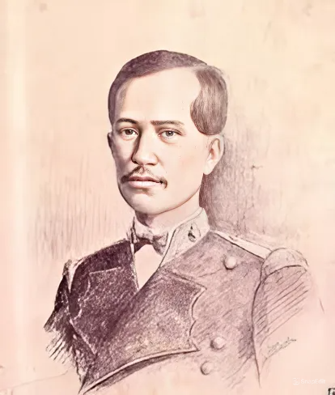
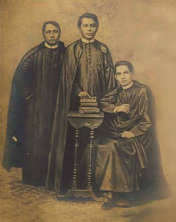

The Propaganda Movement
The Propaganda Movement (1872-1892) was the first Filipino nationalist movement, led by a Filipino elite and inspired by the protonationalist activism of figures such as José Burgos and by his execution at the hands of colonial authorities. Propagandists were largely young men, often mestizos and creoles whose families could afford to send them to study in Spanish universities in Madrid and Barcelona. There, they encountered the tumult of 19th century political movements inspired by Enlightenment thought, individual rights, constitutionalism, and anti-clericalism.
Cavite Mutiny
Sergeant La Madrid
January 20, 1872, about 200 Filipino soldiers and dock workers of Cavite, under the leadership of Sergeant La Madrid, mutinied and killed their Spanish officers
GomBurZa
Fathers Jose Burgos, Mariano Gomez, Jacinto Zamora were accused of treason to Spain and tried in an unfair trial. They were sentenced to death by garrote on February 17, 1872 in Bagumbayan.
La Solidaridad

La Solidaridad, newspaper, based in Barcelona and later Madrid, that espoused the relatively liberal views of the Filipino Propaganda Movement, which sought reform in the Spanish colony of the Philippines. The group was made up of a coalition of Filipino exiles and university students who had matriculated at European universities.
The first issue of the biweekly newspaper was published in 1889 and La Solidaridad remained a major public arm of the movement until its final issue in 1895. The paper sought to put political pressure on the Spanish government, and, though not initially revolutionary, it helped spawn a united front for Filipino independence.
Contributors of La Solidarida
Marcelo .H del Pilar (Plaridel)
Marcelo .H del Pilar (Plaridel)
Marcelo H. del Pilar replaced Graciano López Jaena as the editor of La Solidaridad
Antonio Ma. Regidor
Antonio Ma. Regidor
He was part of diplomatic missions to seek foreign recognition of Philippine independence. Regidor returned to the Philippines in 1907 and died in France in 1910.

Dr. Jose Rizal (Laong Laan)
Dr. Jose Rizal (Laong Laan)
Jose Rizal published several articles and essays under La Solidaridad. One of his notable works is "The Philippines a Century Hence" which discusses his interpretation of history and the future of the Philippines.
Isabelo delos Reyes
Isabelo delos Reyes
Isabelo de los Reyes contributed to most of Manila's newspapers and in 1889 he founded the newspaper El Ilocano, said to be the first such newspaper written solely in a Philippine vernacular.
Mariano Ponce (Tigbalang)
Mariano Ponce (Tigbalang)
With Graciano Lopez-Jaena, Mariano Ponce co-founded the periodical La Solidaridad in February 1889; served as its administrator and headed its literary section.
Eduardo de Lete
Eduardo de Lete
Eduardo de Lete was a Philippine-born Spaniard (Better known as Insulares). He was part of La Solidaridad, a newspaper which was established to express the goal of the Propaganda Movement towards achieving assimilation with Spain.
Antonio Luna (Taga-ilog)
Antonio Luna (Taga-ilog)
In Spain, he contributed to the La Solidaridad, published by the reformist movement of the elite Filipino students in Spain. He wrote a piece titled Impressions which dealt with Spanish customs and idiosyncrasies under the pen-name "Taga-ilog".
Jose Ma. Panganiban (Jomapa)
Jose Ma. Panganiban (Jomapa)
Panganiban is one of the main writers and contributors for La Soli, writing under the pen names "Jomapa" and "J.M.P".Among the articles he published were "El Pensamiento".
Dr. Pedro Paterno
Dr. Pedro Paterno
Paterno's greatest contribution to the country was his role as a mediator in the Pact of Biak-na-Bato on December 14, 1897 which led to peace agreement between the Spaniards and the Filipinos, an account of which he published in 1910.
Jose Alejandrino
Jose Alejandrino
While in Spain, he became an active member of the Propaganda Movement. He joined the editorial staff of La Solidaridad. He was the one who brought the manuscript of the El Filibusterismo to the printing press for publication.
Professor Blumentrit
Professor Blumentrit
Alongside Rizal, Blumentritt was a significant contributor to the publication La Solidaridad, published by Filipino expatriates from 1889 to 1895 as a voice for advocacy of political reforms in the Philippines.
Dr. Morayta
Dr. Morayta
Calle Morayta was named after Spanish writer Miguel Morayta, a supporter of the Propaganda Movement and founder of the Asociacion Hispano-Filipino. Born on Sept. 3, 1834, Morayta became Jose Rizal’s professor at the Universidad Central de Madrid.